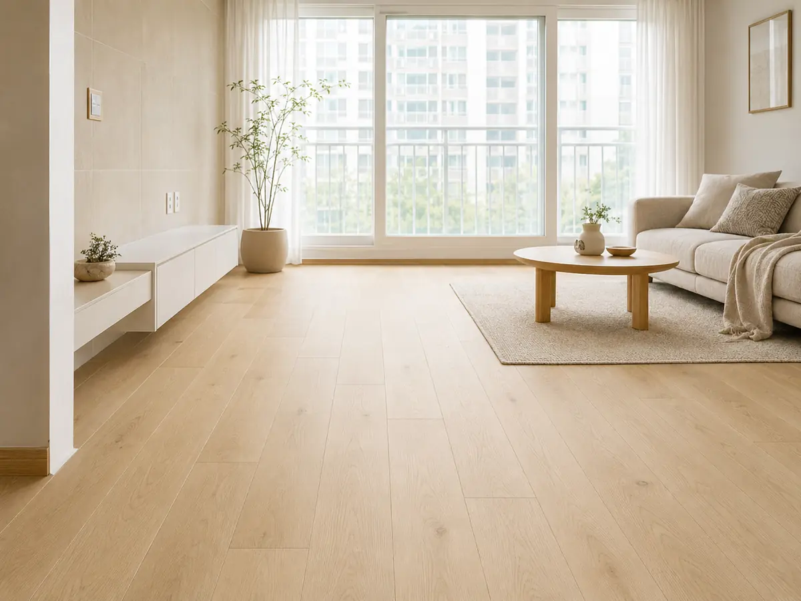
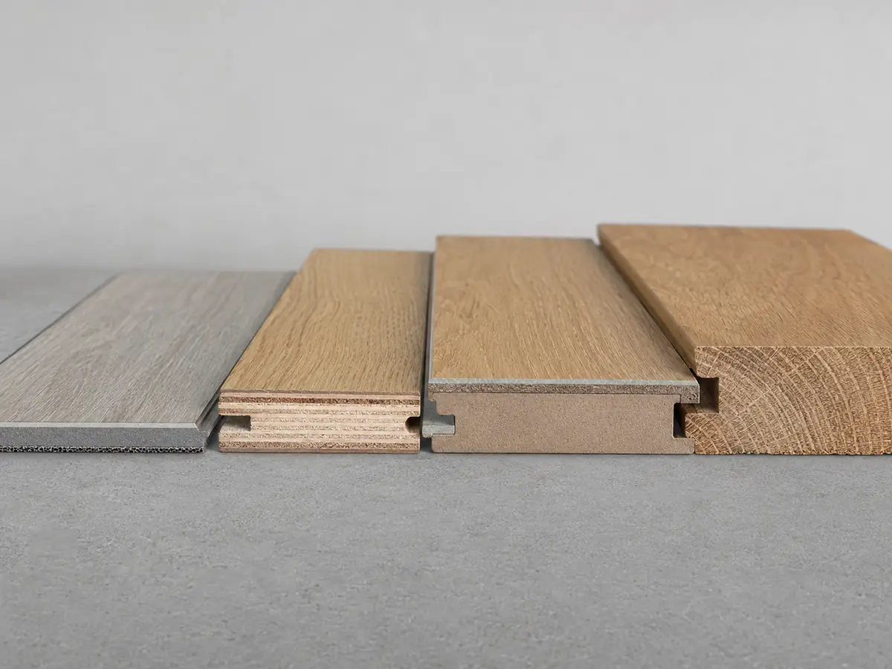

바닥재 가이드
아파트 바닥재는 온돌 발열·소음·내구성·물 저항의 균형으로 고릅니다. 강마루·강화마루·원목마루·LVT·장판을 구조부터 관리까지 비교해, 우리 집에 맞는 한 가지를 고를 수 있게 정리했습니다.
이 글에서 알 수 있는 내용
- 강마루·강화마루·원목마루·LVT·장판의 구조와 결정적 차이
- 두께에 따른 발열 효율과 층간 소음, 위치별 추천
- 견적서에서 반드시 확인할 스펙과 자주 빠지는 항목
- 들뜸·이음 벌어짐 등 대표 하자와 예방·보수법
- 브랜드별 특징을 중립적으로 비교하는 관점
아파트 일반 거주는 강마루가 평균값입니다. 예산·소음이 우선이면 강화마루, 질감·내구가 우선이면 원목마루, 욕실·주방 인접부처럼 물이 닿는 곳은 LVT가 유리합니다.
바닥재 종류 한눈에
이름이 비슷해도 심재(속재료)와 시공 방식이 다릅니다. 강마루·강화마루·원목마루·LVT·데코타일 다섯 가지의 구조와 성격을 먼저 구분하세요.
가장 대중적
비용·소음 절충
질감·장수명
물·습기 강함
소규모 리뉴얼
실물 예시로 보는 차이
사진은 준비되는 대로 아래 카드에 자동으로 표시됩니다. 지금은 임시 placeholder가 보입니다.


두께·발열·소음
아파트 바닥난방에서는 ‘열전도율’이 중요합니다. 얇을수록 발열 효율이 좋지만 발걸음 소리가 커지는 상충 관계가 있습니다.

거실·침실 표준은 7~8mm 대입니다. 발열과 소음이 무난하게 균형을 이룹니다. 물이 닿는 주방·세탁실은 얇은 LVT가, 질감을 중시하는 거실은 두꺼운 원목이 어울립니다.
두께는 문틀 하부 간섭과도 직결됩니다. 기존 바닥 위에 덧대면 문이 안 닫히므로, 두께가 커질수록 철거가 필요해집니다.
| 두께 | 발열 효율 | 층간 소음 | 추천 위치 |
|---|---|---|---|
| 3~5mm (LVT) | 매우 좋음 | 발걸음 소리 큼 | 주방·세탁실 |
| 7~8mm | 좋음 | 보통 | 거실·침실 표준 |
| 10~12mm | 보통 | 차분 | 거실·드레스룸 |
| 14mm 이상 | 다소 낮음 | 저상·안정 | 원목·고급 |
← 표는 좌우로 넘겨 볼 수 있어요
시공 전 필수 점검
선택하는 방법
가족 구성·공간 용도·관리 성향·예산 네 가지를 대입하면 후보가 좁혀집니다.
이럴 때 잘 맞아요
- 무난하게 오래 쓰고 싶다 → 강마루
- 예산을 아끼거나 임대를 준다 → 강화마루·장판
- 물이 자주 닿는 공간이다 → LVT
- 질감·중후함이 최우선이다 → 원목마루
이럴 때는 다시 생각
- 반려동물·아이 → 강화마루는 스크래치·소음 확인
- 습도 변화 큰 집 → 원목마루는 이음 벌어짐 주의
- 바닥난방 발열 우선 → 두꺼운 원목은 효율↓
- 잦은 물청소 습관 → 강마루·원목은 침수에 약함
구매 전 확인할 스펙
같은 ‘마루’라도 표면 내마모·두께·친환경 등급에서 갈립니다. 견적서에 아래 항목이 숫자로 적혀 있어야 비교가 됩니다.
| 항목 | 기준 | 보는 법 |
|---|---|---|
| 종류 | 강마루 / 강화마루 / 원목 / SPC / 장판 | 국내 아파트 표준은 강마루(접착식) — 온돌 열전도·내수성 균형 |
| 표면 내마모 | 강화마루 AC3~AC4 | 반려동물·아이 있으면 내스크래치 표면 확인 |
| 두께·규격 | 강마루 7.5~8mm | 두꺼울수록 질감↑ · 문틀 하부 간섭 확인 |
| 친환경 등급 | E0 이상 (접착제 포함) | 자재뿐 아니라 시공 접착제의 등급도 확인 |
| 패턴·폭 | 일반 / 광폭 / 헤링본 | 헤링본은 자재 로스 15%↑ · 시공비 1.5배 안팎 |
| 철거 포함 여부 | 기존 마루 철거·폐기물 | 강마루 철거비가 상당함 — 견적 포함 여부 명시 |
← 표는 좌우로 넘겨 볼 수 있어요
견적·시공 체크
평당 단가만 보면 철거·걸레받이·문턱이 빠져 나중에 추가됩니다. 포함 범위를 계약 전에 못 박으세요.
- 브랜드·품번 — 제조사와 시리즈명까지 명시
- 철거·평탄작업 — 포함 여부, 단가 별도 표기
- 걸레받이·문턱 — 포함/제외 명기
- 여분 — 보수용 1박스 보관 요청 (단종 대비)
- 하자 보증 — 마루는 통상 2년
하자와 관리
바닥재 하자의 대부분은 하부 평탄도·습도·접착 불량에서 옵니다. 원인을 알면 시공 하자와 사용 부주의를 구분할 수 있습니다.
- 들뜸·삐걱임 — 하부 평탄도·접착 불량. 부분 재시공.
- 이음 벌어짐 — 습도 변화. 1~2달 내 발생 시 재시공.
- 변색 — 직사광선 장기 노출. 시공 하자가 아님.
- 물 자국 — 강마루는 1시간 이상 침수 시 영구 변형.
브랜드별 특징 (중립 정리)
아래는 우열이나 가격대를 매기는 순위표가 아니라, 각 브랜드의 강점과 검토 시 살펴볼 점을 정리한 정보표입니다. 같은 브랜드도 라인업별 표면재·심재가 다르니 모델명 기준으로 확인하세요.
| 브랜드 | 주요 강점·제품군 | 검토 시 살펴볼 점 |
|---|---|---|
| 구정마루 | 강마루 라인업이 넓고 헤링본 등 패턴·컬러 선택지가 다양 | 패턴·컬러 시리즈별 표면 사양 확인 |
| 동화자연마루 | 보드 원자재 수직계열 · 친환경 라인업 보유 | 친환경 등급(제품·접착제) 표기 확인 |
| LX하우시스 지인 | 벽지·창호와 톤을 맞추는 토털 인테리어 연계 | 패키지 구성 시 개별 자재 사양 분리 확인 |
| 한솔홈데코 | 강화마루 라인업 · 비접착(클릭) 시공 제품 | 클릭 시공 시 하부 평탄도·소음 확인 |
| 이건마루 | 원목마루 라인업 · 호텔·주거 시공 실적 | 원목 특성상 습도 관리·재 샌딩 조건 확인 |
매장에서 모델명 기준 샘플을 받아 채광 아래에서 실제 색·질감을 확인하세요. 브랜드보다 시공 품질(하부 평탄·접착)이 체감을 더 좌우합니다.
최종 선택 체크리스트
자주 묻는 질문
강마루와 강화마루, 뭐가 다른가요?
표면 마감과 시공 방식이 다릅니다. 강마루는 무늬목을 붙여 접착 시공하고, 강화마루는 라미네이트 표면을 클릭으로 끼워 맞춥니다. 강마루가 발열·소음 균형이 좋고, 강화마루는 저렴하고 시공이 빠른 대신 발걸음 소리가 큰 편입니다.
바닥난방에는 얇은 게 무조건 좋나요?
발열 효율만 보면 얇을수록 유리하지만, 얇으면 발걸음 소리가 커집니다. 거실·침실은 7~8mm가 발열과 소음의 균형점으로 무난합니다.
물을 자주 흘리는 집인데 강마루 괜찮을까요?
강마루는 1시간 이상 침수되면 영구 변형될 수 있습니다. 주방·세탁실·현관처럼 물이 자주 닿는 곳은 방수에 강한 LVT를 부분 적용하는 방법을 권합니다.
친환경 등급은 어디까지 봐야 하나요?
바닥재 자재의 등급(E0 이상 권장)뿐 아니라 시공에 쓰는 접착제의 등급도 함께 확인하세요. 접착제에서 나오는 유해물질이 실내 공기질에 영향을 줄 수 있습니다.
출처
- 한국목재공업협동조합 마루재 시공 표준
- KS F 3126 (마루판)·KS M 3702 (PVC 바닥재)
- 실내공기질 관리법 (HB·E0·E1 등급)